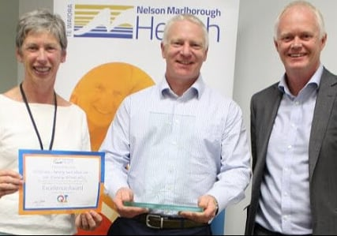
Cardiology department and St John team earn excellence award at DHB Health Quality and Innovation Awards
Read the article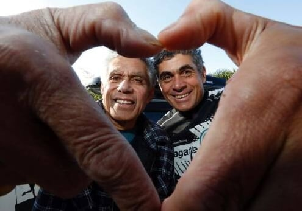
A defibrillator is credited with helping to save Filemoni Fa'avae's life. Nelson hospital cardiologist Dr Tammy Pegg said it was extremely important for AEDs to be publicly available...
Read the article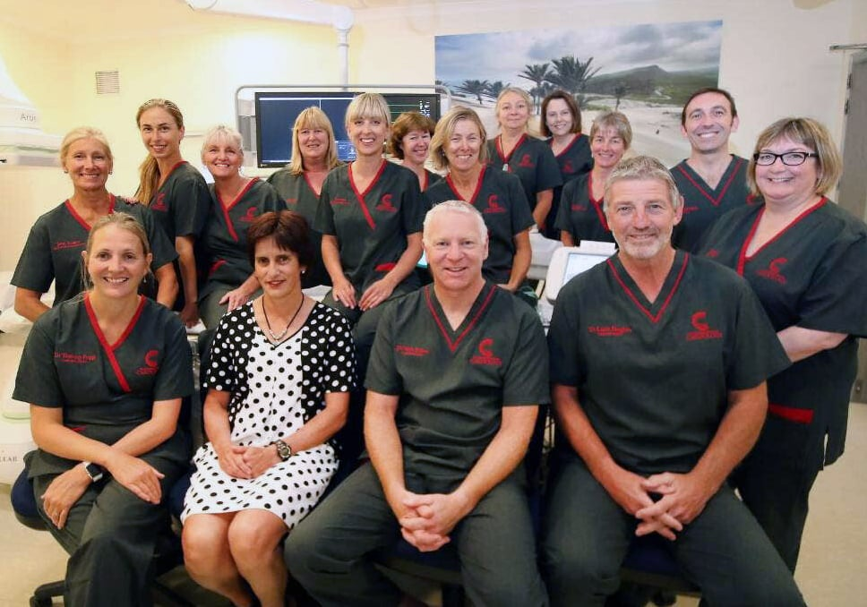
State of the art upgrade for cardiology suite at Nelson Hospital
Read the articleTop doctor's career in cardiology inspired by father's heart attack
Read the article
NMDH Board cardiologist Tammy Pegg speaks at health heart Mother's Day fun run
Read the article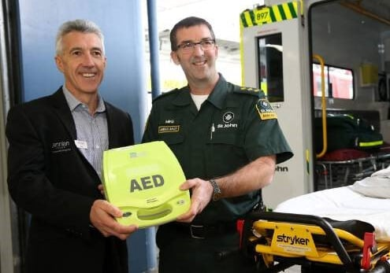
Number of defibrillators in Nelson to increase thanks to initiative
Read the articleIf you are going to have a heart attack then the Nelson region is the place to have it... the cardiologists at Nelson Hospital are reputed to be some of the best in the world.
Read the clipping (PDF)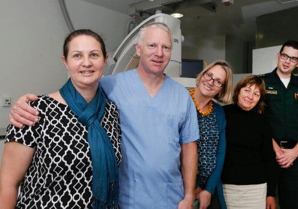
A new process in the DHB allows paramedics and doctors to diagnose and treat heart attacks faster
Read the clipping (PDF)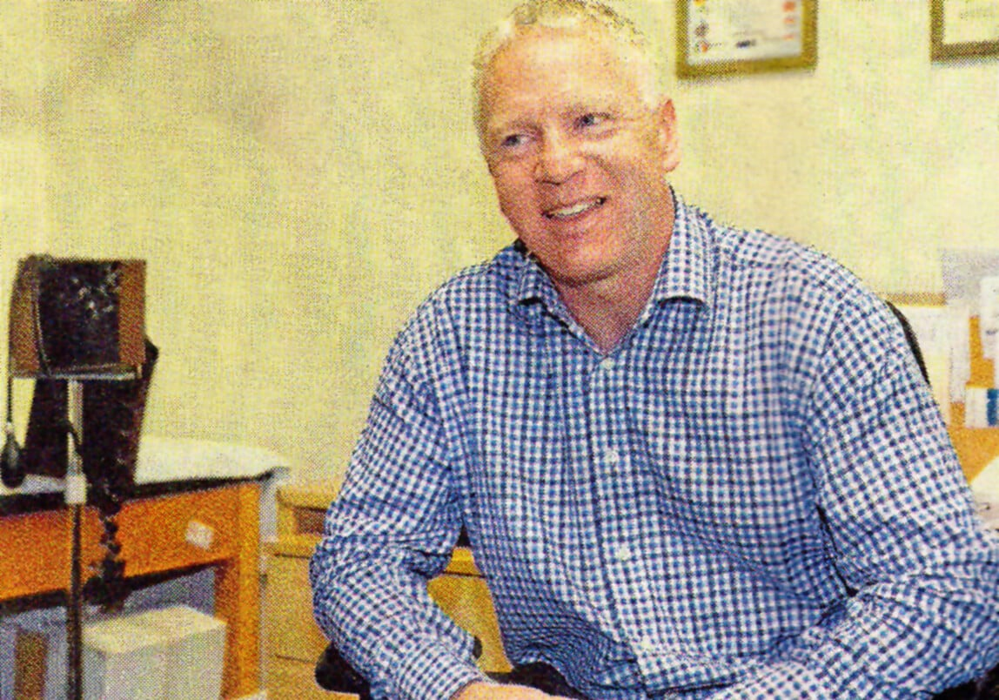
MAKING A DIFFERENCE: The Nelson Hospital Cardiology team delivers some of the highest-quality heart care in the country.
Read the clipping (PDF)A sailor at heart... Dr Nick Fisher knows almost as much about ports and oceans as he does about hearts.
Read the clipping (PDF)Nick Fisher and Andrew Hamer voted "leading Lights" in Wild Tomato's Top 50
Read the clipping (PDF)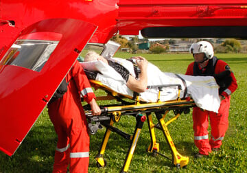
Nelson City's health care tops NZ list. Nelson Hospital has the lowest rate of acute admission for heart failure in New Zealand
Read the clipping (PDF)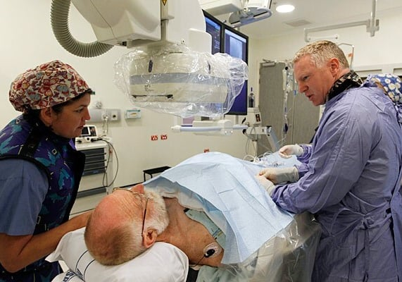
Cardiologist Nick Fisher speaks with patient Des Molloy while performing a cardiac procedure at Nelson Hospital...
Read the clipping (PDF)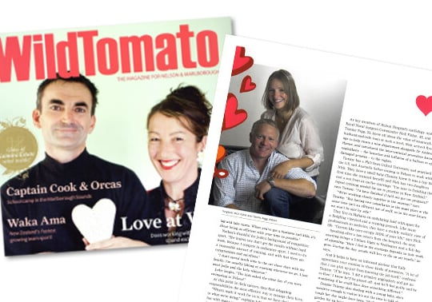
Working Together... Nick and Tammy Fisher
Read the clipping (PDF)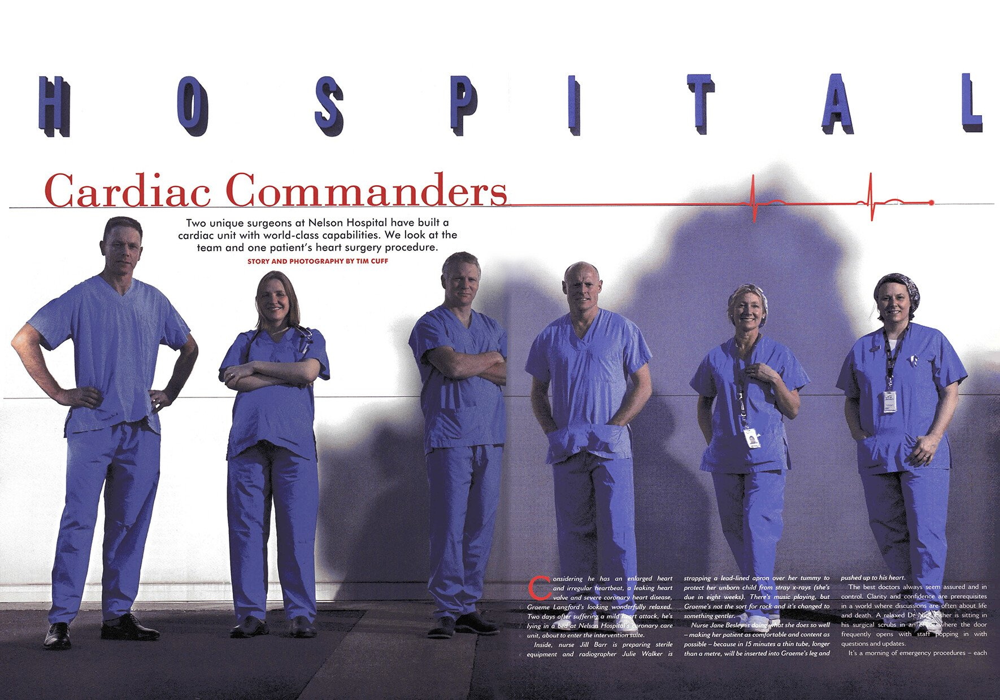
Two unique surgeons at Nelson Hospital have built a cardiac unit with world-class capabilities.
Read the clipping (PDF)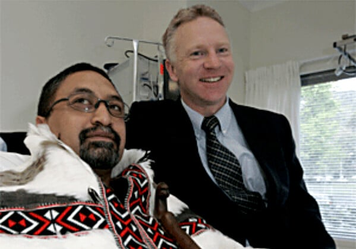
Cardiologist Nick Fisher with Wairemana, the first person to have the angioplasty operation at Nelson Hospital.
Read the clipping (PDF)